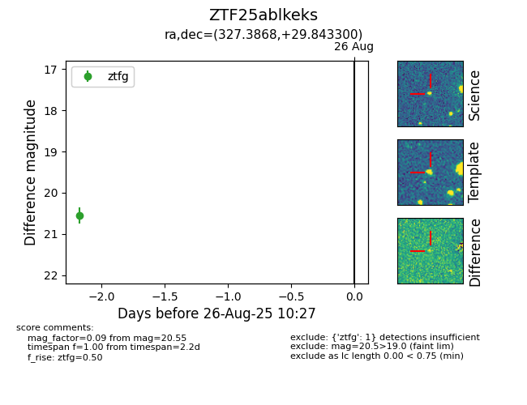

Target ZTF25ablkeks at 2025-08-26 10:27, see:
FINK: fink-portal.org/ZTF25ablkeks
Lasair: lasair-ztf.lsst.ac.uk/objects/ZTF25ablkeks
ALeRCE: alerce.online/object/ZTF25ablkeks
alt names
ZTF25ablkeks (ztf,fink)
coordinates:
equatorial (ra, dec) = (327.3868,+29.84330)
galactic (l, b) = (82.2836,-18.32643)
photometry
last ztfg=20.55
1 ztfg detections
